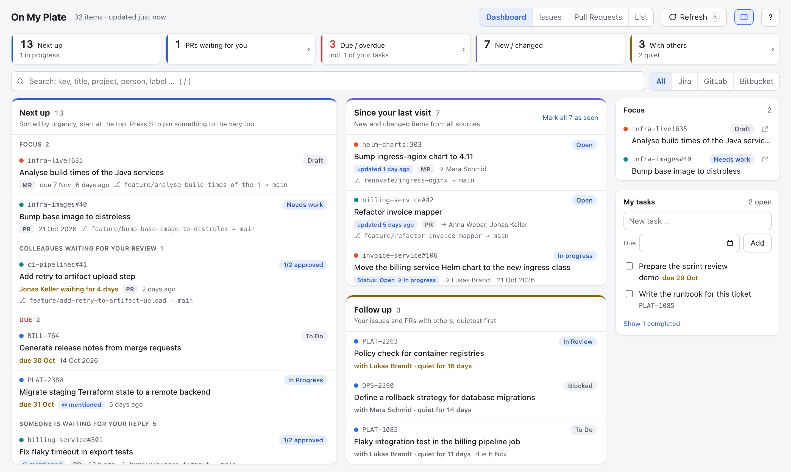
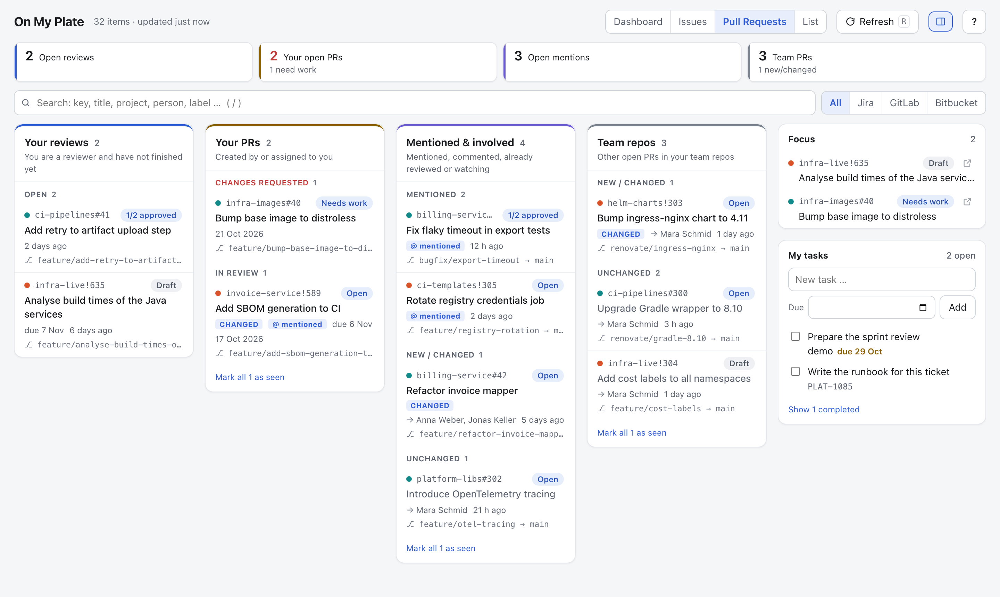

Everything on your plate, in one local dashboard.
On My Plate collects the issues and pull requests that concern you across every project and instance, ranks them by what needs your attention, and keeps your own to-dos right next to them. One Python file. No dependencies. Read-only.
The demo runs entirely in your browser with sample data. Nothing is sent anywhere.

“What do I need to do next?” — answered.
If your work is spread over several Jira projects, GitLab groups and Bitbucket repositories, the answer is usually hidden in three tabs and a dozen filters. The dashboard puts it in one ranked queue.
- Your focus itemsWhatever you starred, always at the top
- Changes requested on your PRsUnblock yourself first
- Colleagues waiting for your reviewLongest wait first
- Due and overdue itemsFrom Jira, GitLab and your own tasks
- Unanswered mentionsUntil you reply
- Work assigned to you
Since your last visit
Everything new or changed, including status transitions like “Open → In Progress”.
Follow up
Your issues and PRs that are with someone else, quietest first, so nothing goes stale.
Four views
Dashboard, an Issues board (to do / waiting / watchlist), Pull Requests (reviews, your PRs, mentions, team repos) and a filterable List.
Personal tasks
Stored in a plain Markdown checklist compatible with Obsidian Tasks. Turn any ticket into a task, or edit the file by hand.
Knows when you're involved
Assigned, created, watched, commented, mentioned, review requested — plus all open PRs in your team's repositories if you like.
Keyboard driven
Move, open, star and hide without touching the mouse. Focus list, private notes and “hide until something changes” stay on your machine.

Built for places where data protection matters.
On My Plate runs on your laptop and only ever reads from your servers. There is no cloud service, no account and no telemetry.
- Nothing is sent anywhere except read-only API calls to your instances.
- The HTTP client refuses anything but reads, requires HTTPS and blocks redirects to other hosts, so tokens never leave.
- Tokens need read scopes only. Ticket data is held in memory and never written to disk.
- The local server binds to 127.0.0.1, checks Host, Origin and Sec-Fetch-Site, and uses one-time sign-in links.
- A strict, hash-based Content Security Policy. No third-party scripts, fonts or images.
- Files are written atomically with mode 0600.
| Source | Token scope |
|---|---|
| Jira Data Center / Server 8.14+ | Personal access token |
| Jira Cloud | read:jira-work, read:jira-user; to follow boards possibly also read:board-scope:jira-software |
| GitLab (self-managed or .com) | read_api |
| Bitbucket Data Center | Project read, Repository read |
Get started in a minute
You need Python 3.11 or newer. Nothing else. Want to look around first? Open the live demo in your browser, or run --demo locally — both use sample data and make no network requests.
# download the single file
curl -O https://raw.githubusercontent.com/Gr33ndev/OnMyPlate/main/onmyplate.py
# look around with sample data
python3 onmyplate.py --demo
# first real run writes onmyplate.config.json
python3 onmyplate.pyFill in the URLs and tokens in onmyplate.config.json and start it again. Your browser opens and signs in automatically. Every source is optional.
Prefer a command on your PATH?
pipx install git+https://github.com/Gr33ndev/OnMyPlate
onmyplate --demoMoving to a new laptop? --export and --import take your tasks and settings along — tokens only if you ask for them.